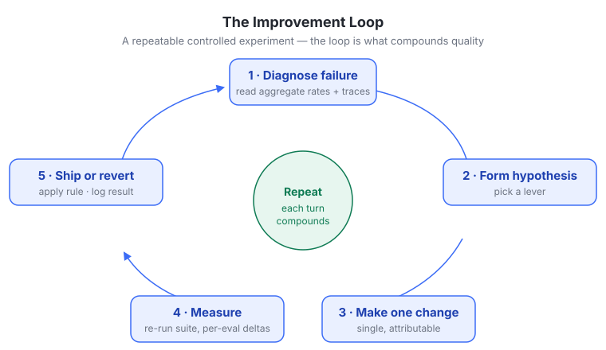
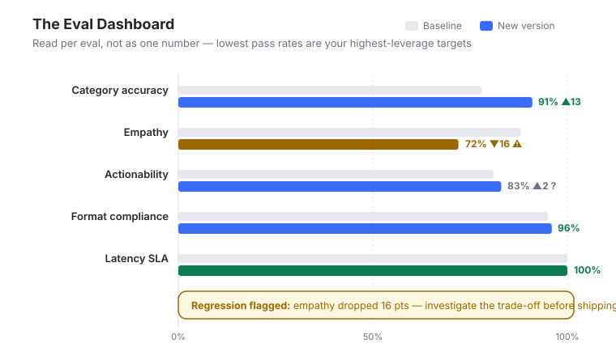
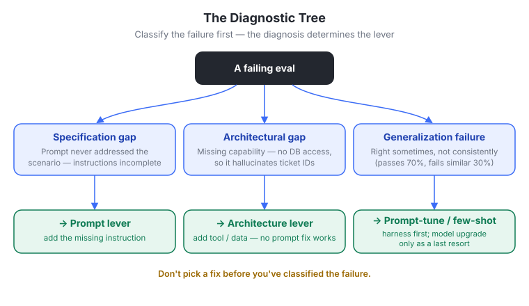
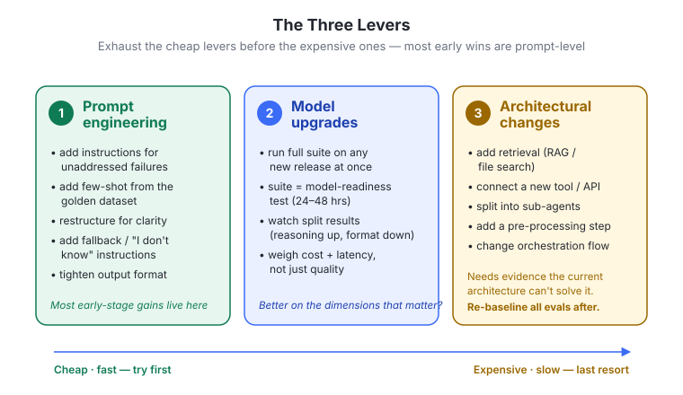
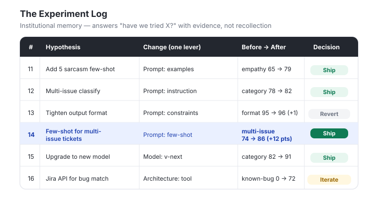
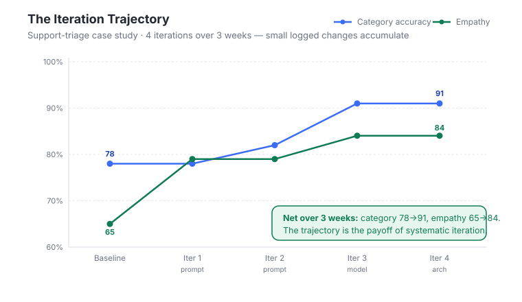

#Chapter 10 — Iteration to Improve Agent Quality
#In one line
Evals don't improve your product — experiments do; this chapter teaches the iteration loop (diagnose → hypothesize → change one thing → measure → ship or revert) and the three levers (prompt, model, architecture) a PM uses to turn eval results into compounding quality gains.
#Why it matters for PMs
By this point in the course the infrastructure exists: code evals, LLM judges, a reference dataset, and calibrated reliability metrics. The trap is believing that infrastructure is the goal. It isn't. Evals are a measuring instrument, not an improvement engine — they only tell you whether a change you made actually worked. The quality of an AI product is produced by the experiments you run against that instrument, and the discipline with which you run them. Teams that iterate systematically outperform teams that make ad hoc changes and hope, because every systematic cycle yields either an improvement or durable knowledge about what doesn't work — both are progress, whereas a vibes-based change that "felt right" leaves you knowing nothing. For PMs specifically this is where the role gets concrete: you own what to fix next (prioritization against eval data and user impact), you keep the AI PRD and dataset in sync with reality, and you make the ship/iterate/revert call on evidence rather than instinct.
#Why it matters for PMs (the leverage shift)
A second reason this module matters now: coding agents collapse the cost of running experiments. The rigor described here — one change at a time, full eval suite re-run, logged result, updated PRD — used to read as "process overhead" that teams skipped under deadline pressure. With coding agents doing the mechanical work (re-running suites, drafting prompt variants, updating logs), that rigor no longer adds overhead. The course frames this explicitly: coding agents "can finally make your teams as systematic as you always wanted to be." The PM's job is to supply the judgment (which lever, which priority, ship or revert), not the keystrokes.
#Core concepts
- Evals measure; experiments improve. The foundational principle of the module. An eval suite is a model-readiness / change-readiness test. It never raises quality on its own — it adjudicates whether an experiment moved the number.
- The iteration loop. Diagnose the failure → form a hypothesis → make one change → measure against baseline → ship or revert. Repeat. Each turn compounds.
- Three diagnostic questions (run per failing eval, they route you to a lever):
- Specification gap — the prompt never addressed the scenario. The instructions are incomplete. → Prompt lever.
- Architectural gap — the system lacks a capability it needs (e.g., no DB access, so it hallucinates ticket IDs). No prompt change can fix this. → Architecture lever.
- Generalization failure — the agent handles the scenario sometimes but not consistently (passes empathy on 70% of billing tickets, fails on a similar 30%). It knows what to do but doesn't do it reliably. → Prompt tuning / harness engineering / better few-shot first; model upgrade only as a last resort.
- The three levers, ordered by cost: Prompt engineering (fastest, cheapest) → Model upgrades → Architectural changes (expensive, sometimes necessary). Always exhaust cheaper levers before reaching for expensive ones.
- One change at a time. Non-negotiable experimental hygiene. Two changes that together add 8 points teach you nothing about which one helped — next time a similar problem appears, you're guessing again.
- Same reference dataset, always. Every experiment compares the new version against the current production baseline on the same reference dataset. Comparing across datasets, or to a baseline you set three months ago on a since-updated dataset, produces numbers that aren't comparable.
- Per-eval reporting, not aggregate. "Category accuracy 78%→91% but empathy 88%→72%" is actionable. "Overall quality improved" is not. Per-eval deltas reveal whether the change helped where intended and whether it caused regressions elsewhere.
- Ship / iterate / revert decision rule:
- Ship when all evals meet thresholds and no eval regressed more than ~2 percentage points. Update the baseline and log it.
- Iterate when the target eval improved but another regressed — investigate the trade-off before shipping; a small adjustment often recovers both.
- Revert when the change made things worse or had no measurable impact. "No measurable improvement" is not an improvement. Don't ship on vibes.
- Noise vs. signal. For close calls (2–3 pt improvements), check for noise by enlarging the dataset or re-running. On 50 traces a 2% delta is a single trace flipping fail→pass (likely noise); on 200 traces it's 4 traces (more likely signal).
- Re-baseline after architecture changes. A new architecture can change the entire failure distribution, so old pass rates are no longer comparable. Establish fresh baselines on the full suite, then iterate.
- Two glossary terms introduced:
- Experiment log — a documented record of every change: hypothesis, the specific modification, before/after eval results, and the ship/iterate/revert decision.
- Regression — a decline in pass rate on a previously passing eval, introduced by a new change. Regressions must be investigated before shipping.
#The mental model — how to think about this
Picture two layers moving in lockstep. The bottom layer is the agent (prompt, model, architecture). The top layer is your eval infrastructure (PRD thresholds, reference dataset, judges). The iteration loop improves both at once: every cycle makes the agent better and makes the measuring instrument sharper — failing traces become new test cases, resolved traces become regression tests, the PRD absorbs new edge cases and thresholds.
Think of yourself as a scientist running a controlled experiment, not a tinkerer. The reference dataset is your fixed control surface; you change exactly one variable per run so the result is attributable. The aggregate pass rate is a map that tells you where the problem is — but you must "go to the ground" and read ~10 specific failing traces and their reasoning strings to learn why it's happening. Abstract numbers locate the problem; concrete trace reading explains it. Diagnosis always precedes the fix, because the diagnosis (spec / architecture / generalization) is what tells you which lever to pull. Reaching for an expensive lever (model swap, re-architecture) before exhausting prompt fixes is the most common and most costly mistake.
#Key frameworks / steps / loops
The iteration loop (the spine of the module):
- Diagnose the failure — start with aggregate pass rates; find which evals are failing most.
- Form a hypothesis — answer the three diagnostic questions to pick a lever.
- Make one change — a single, attributable modification.
- Measure — re-run the full eval suite against the production baseline on the same dataset; report per-eval deltas.
- Ship or revert — apply the decision rule; log the result; update baseline if shipped.
From eval results to diagnosis (Lesson 1 — three reads, in order):
- Aggregate pass rates — lowest pass rates are highest-leverage targets (72% has more headroom than 94%, and the traces it catches are the ones users hit most).
- Failure distribution — are failures concentrated by input type, trace code, or user segment? If 80% of category-label failures come from multi-issue tickets, it's a multi-issue handling problem, not a general category problem — a precise diagnosis maps to a targeted fix.
- Cross-eval correlation — when two judges (empathy + actionability) fail on the same traces, suspect a single root cause (e.g., the agent produces terse, minimal responses), not two independent problems. Fix the root cause first.
- Then read 10 specific failing traces and their reasoning strings.
The three levers (Lesson 2):
- Lever 1 — Prompt engineering (fastest/cheapest; most early-stage gains live here). Common fixes: add explicit instructions for unaddressed failure modes; add few-shot examples from the golden dataset for weak scenarios; restructure for clarity (system instructions / examples / constraints / output format); add "I don't know" / fallback instructions for edge cases; tighten output-format constraints (exact labels, required fields). Experiment: one change → re-run suite → compare to baseline → ship if target improved and nothing else regressed >2 pts.
- Lever 2 — Model upgrades. Run the full eval suite against any new model release immediately — the suite is your "model readiness test," collapsing weeks of manual testing into 24–48 hours. Watch for split results (better reasoning, worse format-following). A model better on 4/5 evals but introducing a new failure category on the 5th isn't necessarily an upgrade. Evaluate cost and latency alongside quality — run the latency-SLA eval too. The decision is not "is this model better?" but "is this model better on the dimensions that matter, at a cost and latency we can accept?"
- Lever 3 — Architectural changes (expensive, sometimes necessary). Examples: add a retrieval step (RAG / file search), connect a new tool or API, split one agent into specialized sub-agents, add a pre-processing step, change the orchestration flow. Require clear evidence the current architecture can't solve the problem first — "hallucinates ticket IDs without DB access" is architectural; "sometimes miscategorizes" is a prompt problem until prompt levers are exhausted. Re-baseline all evals afterward.
Running experiments systematically: maintain an experiment log; A/B against the production baseline on the same reference dataset (non-negotiable); report per-eval deltas; check noise on close calls; apply the ship/iterate/revert rule.
The PM's role (Lesson 3): PM owns prioritization ("what to fix next"); engineers own execution ("how to fix it"). Collaborative trace review (PM brings product context, engineer brings technical log analysis). Update the PRD and the dataset every cycle.
#Visual explainers

ch9-01-improvement-loop.jpg. The iteration loop rendered as a cycle: diagnose the failure → form a hypothesis → make one change → measure → ship or revert → back to diagnose. Teaching point: improvement is a repeatable controlled-experiment cycle, not a one-shot fix; the loop is what compounds quality.
ch9-02-eval-dashboard.png. A per-eval pass-rate dashboard comparing a new agent version against the production baseline across the eval suite. Teaching point: you read results per eval, not as one aggregate number — the lowest pass rates are your highest-leverage targets and regressions are visible at a glance.
ch9-03-diagnostic-tree.jpg. A decision tree branching on the three diagnostic questions (specification gap → fix prompt; architectural gap → add tool/data; generalization failure → prompt-tune/few-shot, model upgrade as last resort). Teaching point: the diagnosis determines the lever — don't pick a fix before you've classified the failure.
ch9-04-three-levers.jpg. The three improvement levers laid out by cost/speed: Prompt engineering (cheap, fast) → Model upgrades → Architectural changes (expensive). Teaching point: exhaust the cheap levers before the expensive ones; most early wins are prompt-level.
ch9-05-experiment-log.jpg. A tabular experiment log — hypothesis, modification, before/after eval results, ship/iterate/revert decision (e.g., "Experiment #14: few-shot for multi-issue tickets → +12 pts"). Teaching point: the log is institutional knowledge; it answers "have we tried X?" and "why don't we use the newer model?" with evidence instead of memory.
ch9-06-iteration-trajector.jpg. The support-triage case study plotted over 4 iterations / 3 weeks, showing category accuracy climbing 78%→91% and empathy 65%→84%. Teaching point: small, attributable, logged changes accumulate into large quality gains; the trajectory is the payoff of systematic iteration.#How this connects to: simulation / dataset strategy / synthetic data / actual data
- Actual data is the diagnostic substrate: every diagnosis begins by reading real failing traces and their reasoning strings, and the failure distribution (by input type / trace code / user segment) is read off real traces. New failure modes surface from production edge cases.
- Dataset strategy is the closed loop's memory. Every iteration cycle produces new labeled examples (Module 8): failing traces that expose new patterns get added to the reference dataset to expand coverage (otherwise you keep rediscovering the same failures because the evals never learned to test for them); traces a fix resolved stay in the dataset as regression tests so the next change can't silently reintroduce the failure. The dataset is the fixed control surface for A/B comparison — same dataset, every experiment, non-negotiable.
- Synthetic / simulation surfaces implicitly in two places: few-shot examples added during prompt fixes are drawn from the golden dataset (curated/ideal outputs), and the realism of offline evals (established in earlier modules) is what makes the iteration loop trustworthy. The module's noise-vs-signal point (enlarge the dataset to confirm a 2–3 pt change) is a direct argument for growing dataset size — by sampling more real traces or generating more coverage — when statistical power is too low to trust a result.
- Flow: actual traces → diagnosis → experiment on a single lever → measure on the fixed reference dataset → resolved traces become regression tests, new failures become new test cases → the dataset (and PRD) improve alongside the agent. The next module extends this loop to live production traffic (monitoring, drift detection — closing the AI Flywheel).
#Working with ML / eng teams
- Clear ownership split: PM owns prioritization ("what to fix next") based on eval data, frequency, user impact, and business risk. Engineers own implementation ("how to fix it") — the actual prompt change, model integration, or architecture work.
- Collaborative trace review is the highest-bandwidth ritual. PM and engineer read the same failing traces from different angles: PM contributes product context ("this failure pattern maps to our highest-volume ticket category"); engineer contributes technical log analysis ("the model is losing context after the third tool call"). Together they reach root cause faster than either alone.
- Architecture decisions need engineering evidence. Before committing expensive architecture work, the team must produce clear evidence the current architecture can't solve the problem — an engineering judgment the PM should demand and pressure-test, not wave through.
- Cost/latency are joint constraints. Model-upgrade decisions require engineering input on latency and cost; the PM weighs them against the SLA the product can accept (e.g., a real-time triage agent can't double latency).
- The experiment log is shared institutional memory that prevents both sides from re-running dead experiments and gives the PM a data-backed answer to "why aren't we on the newer model?"
#Role of design
The module does not address design directly. Adjacent implications a PM can carry over: empathy/tone judges (the "empathy judge" in the case study) encode a quality bar that is fundamentally a UX/content-design question — what a "good," appropriately empathetic response looks like is a design call that should inform the golden outputs and few-shot examples. Output-format constraints (exact labels, required fields) are also where product/design surface requirements meet the prompt. Beyond that, design's role here is "—" in the source material.
#Process to follow
- Pull the new version's eval results and compare per-eval against the production baseline on the same reference dataset.
- Rank by lowest pass rate to find highest-leverage targets; inspect the failure distribution for concentration; check cross-eval correlation for shared root causes.
- Read 10 failing traces and their reasoning strings for each target eval.
- Run the three diagnostic questions (spec / architecture / generalization) to choose a lever.
- Make exactly one change on the cheapest viable lever (prompt first).
- Re-run the full eval suite; report per-eval deltas, not aggregate.
- Apply the decision rule: ship (all thresholds met, no >2 pt regression) / iterate (target up, something regressed — investigate) / revert (worse or no measurable impact). For 2–3 pt calls, enlarge the dataset or re-run to rule out noise.
- Log the experiment (hypothesis, change, before/after, decision); if shipped, update the baseline.
- Update the AI PRD with revised thresholds, new trace codes, updated golden outputs, new edge cases.
- Update the dataset: add new-pattern failing traces as test cases; keep resolved traces as regression tests.
- If you made an architecture change, re-baseline the whole suite before the next cycle.
#References & sources
- Reforge — source course; module "Iteration to Improve Agent Quality." Lessons: 1) Intro, 2) Three Levers for AI Improvement, 3) The Role of the PM in the Iteration Loop, 4) Recap and Further Learning. (Course hosted on Docebo/SCORM; chapter assets prefixed
ch9-.) - Module 3 — the AI PRD. Referenced as the living document to update every iteration cycle (thresholds, trace codes, golden outputs, edge cases).
- Module 8 — dataset / labeled examples. Referenced as the source of new labeled examples and regression-test traces produced each cycle.
- Next module — production / online evaluation. Extends evaluation to live traffic: monitoring real user experience, detecting drift, closing the AI Flywheel loop.
- Running case study — Support Triage Agent (hypothetical, 4 iterations in 3 weeks): baseline 78% category accuracy / 65% empathy / 100% latency compliance → Iter 1 (prompt: 5 sarcasm few-shot examples) empathy →79% → Iter 2 (prompt: multi-issue classification instruction) category →82% overall, 86% on multi-issue → Iter 3 (model upgrade, tested in ~2 hrs, shipped in 48 hrs) category →91%, empathy →84%, latency compliant → Iter 4 (architecture: add Jira API tool for known-bug matching, affecting 12% of technical tickets; new "known bug detection rate" eval at 72% and iterating). Final: category 78→91%, empathy 65→84%, one architectural expansion in progress.
- Glossary terms defined in-module: Experiment Log; Regression.
- Tools/techniques named: RAG / File Search (retrieval), sub-agents, few-shot examples, golden dataset, latency-SLA eval, Jira API tool, LLM judges (empathy judge, actionability judge), coding agents.
- No external books, articles, or named individuals are cited in this module.
#Skill / template / app ideas
/experiment-logskill — scaffolds and appends to a structured experiment log (hypothesis, lever, change, baseline, per-eval before/after deltas, decision); auto-flags experiments with no measurable impact as revert candidates.- Eval-diff dashboard template — a per-eval before/after table that enforces baseline-on-same-dataset comparison, highlights any eval regressing >2 pts in red, and computes whether a delta clears the noise floor given dataset size.
/diagnose-failureskill — paste 10 failing traces + reasoning strings; returns a classification across the three diagnostic questions (spec / architecture / generalization) and the recommended lever, with the cheaper-lever-first ordering enforced.- AI PRD sync checklist — a recurring template that prompts, after each cycle, to update thresholds, trace codes, golden outputs, and edge cases, and to move resolved traces into the regression set.
- Noise-floor calculator — input dataset size and observed delta; output whether the change is plausibly signal vs. a handful of traces flipping (e.g., 2% on 50 = 1 trace).
- Ship/iterate/revert gate — a lightweight decision tool that takes per-eval deltas and threshold config and returns the recommended decision with the regression that needs investigation, if any.
#Teaching notes (for the instructor)
- Lead with the one-liner and never let it go: "Evals don't improve your product — experiments do." Everything in the module hangs off this. If students remember one sentence, make it this one.
- The single most important habit to drill is "one change at a time." Use the concrete failure case from the transcript: two simultaneous changes that add 8 points teach you nothing — show them they'd be guessing next time. This is the discipline most teams violate under pressure.
- Teach the levers in cost order and police the jump. The recurring mistake is reaching for a model swap or re-architecture before exhausting prompt fixes. Drill the litmus: "hallucinates ticket IDs without DB access" (architectural) vs. "sometimes miscategorizes" (prompt problem until proven otherwise).
- Use the support-triage case study as the spine of the lesson — it cleanly demonstrates all three levers in sequence (prompt ×2 → model → architecture) and the discipline of measuring each on the same dataset. Have students predict ship/iterate/revert before revealing each result.
- Make the noise point tangible with the 50-vs-200-trace math (2% = 1 trace vs. 4 traces). PMs over-trust small deltas; this number reframes statistical power intuitively.
- Reinforce the PM ownership line clearly: PM = "what to fix next" (prioritization on impact/frequency/risk); engineer = "how to fix." The empathy-3% vs. category-15% example is the perfect illustration that lower pass rate ≠ higher priority.
- Close the loop: stress that the iteration loop improves the eval infrastructure (PRD + dataset) as much as the agent — resolved traces become regression tests, failures become new test cases. Then bridge to the next module (production monitoring / drift / the AI Flywheel).
- Frame the coding-agent leverage honestly: the rigor here is now cheap to execute because coding agents do the mechanical work — so the excuse "we don't have time to be this systematic" no longer holds. The PM supplies judgment, not keystrokes.